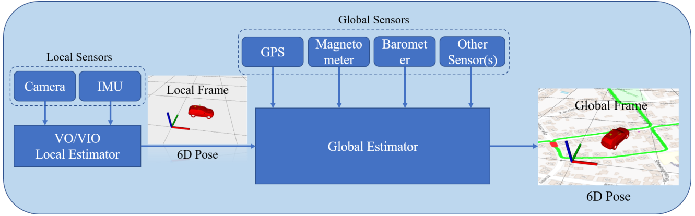
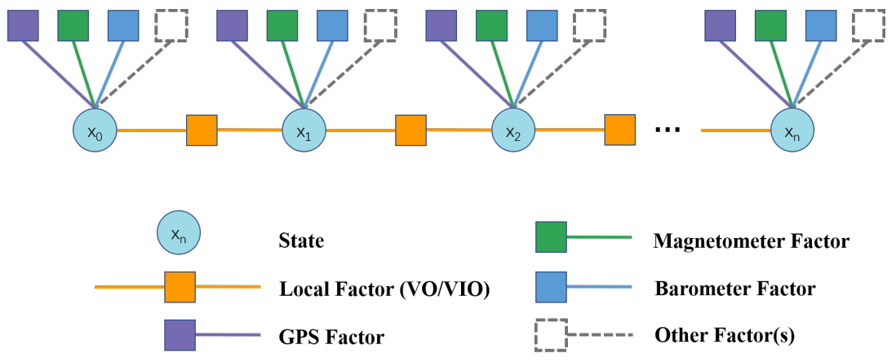

局部传感器(如相机，IMU，激光雷达等)被广泛应用于建图和定位算法。尽管这些传感器能够在没有GPS信息的区域，实现良好的局部定位和局部建图效果，但是这些传感器只能提供局部观测，限制了其应用场景：
- 第一个问题是局部观测数据缺乏全局约束，当我们每次在不同的位置运行算法时，都会得到不同坐标系下的定位和建图结果，因而难以将这些测量结果结合起来，形成全局效果。
- 第二个问题是基于局部观测的估计算法必然存在累计漂移，尽管回环检测可以一定程度上消除漂移，但是对于数据量较大的大范围场景，算法依然难以处理。
相比于局部传感器，全局传感器(如GPS，气压计和磁力计等)可以提供全局观测。这些传感器以地球为坐标系，并且输出的观测数据的方差不随时间累计而增加。但这些传感器也存在一些问题，导致无法直接用于精确定位和建图。以GPS为例，GPS数据通常不平滑，存在噪声，且输出速率低。
因此，一个简单而直观的想法是将局部传感器和全局传感器结合起来，以达到局部精确全局零漂的效果。这也就是vins fusion这篇论文的核心内容。
vins fusion的算法架构如图所示：

下图以因子图的方式表示观测和状态之间的约束：

其中圆形为状态，黄色正方形为局部观测的约束，即来自VO/VIO的相对位姿变换，而其他矩形为全局观测的约束，比如紫色为来自GPS的约束。
局部约束(残差)的构建参考vins mono论文，计算的是相邻两帧之间的位姿残差。这里只讨论GPS带来的全局约束。首先当然是将GPS坐标，也就是经纬度转换为大地坐标系。习惯上选择右手坐标系，x,y,z轴正方向分别是北东地或东北天方向。接下来就可以计算得到全局约束的残差：
其中z为GPS测量值，X为状态预测，h方程为观测方程。X可以通过上一时刻状态以及当前时刻与上一时刻的局部约束计算出来。X的坐标系在全局坐标系下，以起点为远点。通过观测方程h，也就是GPS-全局坐标系的坐标变换转换到GPS坐标系下。这样就构建了一个全局约束。
之后的优化就交给BA优化器进行迭代优化，vins fusion沿用了ceres作为优化器。
参考文献
Tong Qin, Shaozu Cao, Jie Pan, and Shaojie Shen. “A General Optimization-based Framework for Global Pose Estimation with Multiple Sensors”